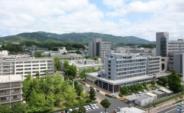
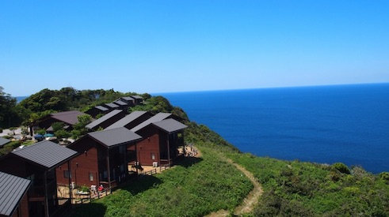
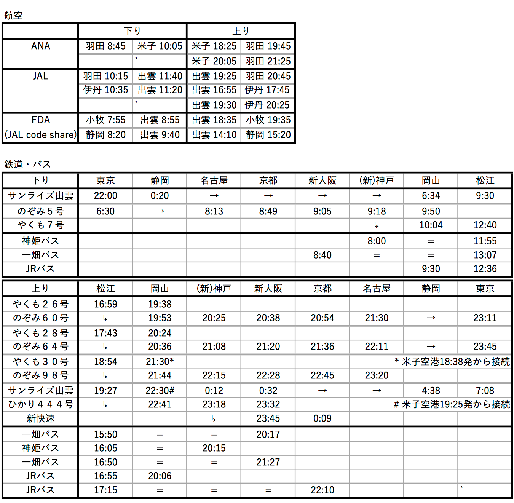

| 浅川嗣彦（前橋工科大学） | 福間将文 （京都大学） | 後藤郁夏人*（理化学研究所） |
| 伊敷吾郎（筑波大学） | 加堂大輔（Chulalongkorn Univ.） | 加藤光裕*（東京大学） |
| 河本 昇（北海道大学） | 松本信行*（京都大学） | 松浦 壮（慶應義塾大学） |
| 三角樹弘*（秋田大学） | 夏目利一*（立命館大学） | 西村 淳（KEK） |
| 太田和俊*（明治学院大学） | 大野木哲也*（大阪大学） | 佐古彰史・郷原惇平（東京理科大学） |
| 笹倉直樹（京都大学） | 佐藤勇貴（名古屋大学） | 土屋麻人（静岡大学） |
| 米谷民明*（放送大学） | ||
題目・時間は変更される場合があります。pdf版
9月9日 (月) 13:30-18:00
（座長：浅川嗣彦）
13:30-14:45 夏目利一「A new look at Ginsparg-Wilson indices from mathematical viewpoint」
15:00-16:30 佐古彰史・郷原惇平「幾何学の意味での量子化の一般化」
16:45-18:00 伊敷吾郎「Berezin-Toeplitz量子化とdiffeomorphism」
9月10日 (火) 09:45-18:15
09:00 島根大学正門 → 09:30 マリンパーク多古鼻 (貸切バス)
（座長：福間将文）
09:45-11:00 大野木哲也「TKNN formula for general Hamiltonian for D=2n+1 dimensions」
11:15-12:30 加堂大輔「テンソル繰り込み群を用いた複素作用問題へのアプローチ」
（座長：西村淳）
14:00-15:15 加藤光裕「格子超対称性を巡回Leibniz則で手懐ける」
15:30-16:15 松浦 壮「球面上の超対称ゲージ理論の数値実験」
16:30-17:15 太田和俊「Symmetries in supersymmetric gauge theory on the graph」
17:30-18:15 三角樹弘「R×S1上のCPNシグマ模型の格子シミュレーション」
18:30-21:00 BBQ/懇親会
21:00 マリンパーク多古鼻 → 21:30 島根大学正門 → 21:40 松江駅 (貸切バス)
9月11日 (水) 09:30-18:30
（座長：加堂大輔）
09:30-10:45 西村 淳「複素ランジュバン法の様々な応用の可能性」
11:00-11:45 松本信行「Tempered Lefschetz thimble法の強相関電子系への適用」
（座長：土屋麻人）
13:15-14:30 米谷民明「A review on Matrix theory, its covariantization and related problems」
14:45-16:00 福間将文「Emergent quantum geometry from stochastic random matrices」
16:15-17:30 笹倉直樹「テンソル模型に関連する新しいタイプの行列模型の解析的数値的研究」
17:45-18:30 佐藤勇貴「Limit of large cosmological constant in 2D quantum gravity」
9月12日 (木) 09:30-15:15
（座長：笹倉直樹）
09:30-10:45 後藤郁夏人「Recent developments in the Jackiw-Teitelboim gravity」
11:00-11:45 土屋麻人「ゲージ重力対応における繰り込み群と情報幾何」
（座長：西垣真祐）
13:15-14:00 浅川嗣彦「Spherical D-braneのchargeについて」
14:15-15:15 河本 昇「Link approach of lattice SUSY for N=D=4 super Yang-Mills」
〒690-8504
島根県松江市西川津町1060
0852-32-6100 (代表)
注意：自家用車で来学の方は正門守衛所にて臨時入構証を受け、外来者駐車場(50台)に駐車してください
〒690-1213
島根県松江市島根町多古1050
0852-85-3387
注意：公共交通手段はありません

松江市内バス
松江駅→島根大学前：市営
北循環線内回り
松江駅→県民会館前→島根大学前：
市営 大学・川津行,
一畑 美保関ターミナル行,
マリンプラザしまね行
島根大学前→松江駅：市営
北循環線外回り
島根大学前→県民会館前→松江駅：
市営 県合同庁舎・かんべの里行,
一畑 松江駅・メッセ行,
松江駅・メッセ行
9/9出発・9/12帰着の交通機関 (最新情報は 出雲空港・
米子空港・
S早得きっぷ などをご覧ください)

宿泊
松江駅近傍〜しんじ湖温泉近傍には多数のホテルがあり、いずれからも上記のバスで大学まで15分程度でアクセスできます。
また、大学からの徒歩圏内にはレインボープラザホテルがあります。
参加ご希望の方は以下の必要事項をご記入のうえ、8月30日 (金) までに
mochizuki_AT_riko.shimane-u.ac.jp
宛にお送りください。
参加登録費・茶菓子代・送迎バス費は不要です。
懇親会費は2,000円を予定しています。
9月10日の昼食の一括注文をご希望の方は出前メニューについてもご記入ください。
科学研究費等の財源を持たない大学院生・PDの方に限り、定額の旅費補助を支出できます。
ただし財源が限られておりますため、希望者多数の場合の採否、および補助金額については主催者にご一任ください。
Subject：離散研究会2019参加登録
【氏名】
【所属・職名/学年】
【メールアドレス】
【参加日程】9・10・11・12
【旅費補助】希望する・希望しない
【懇親会】参加・不参加
【出前注文】要（＿＿定食）・不要